This was not the only suicide among medical trainees in 2024.

“I’ve grown used to it.”
Upon reading yet another report of a medical trainee’s suicide on her phone, Bingbing, a former trainee who voluntarily left her
program, could only muster this thought.
At that time,Bingbing had just received her preliminary
results for her second attempt at the graduate school entrance exam and was preparing for the
upcoming interviews. Although her scores weren’t ideal, and she faced the possibility of
transferring to a different program, Bingbing felt relieved about her decision to leave the
residency program and pursue further studies. It was a chance to return to campus life. She hoped
that after graduation, she might find a teaching position at a university and finally enjoy a
regular workweek with weekends off.
While the public was shocked by the occurrence of four trainee suicides in just one month, Bingbing found it unsurprising. She had considered quitting
within the first three months of her training—and had even contemplated suicide at one point. After
two grueling years, she finally decided to end her suffering and leave the program.
In China,
medical students must complete five years of undergraduate education, followed by three years
of standardized residency training and an additional two to four years of specialized training
before they can officially become specialists. This system, known as “standardized residency
training” (commonly abbreviated as “residency”), is an unavoidable step for medical
students on their journey to becoming licensed doctors.
Each department rotation in the residency program lasts three months. For many trainees, the
first rotation is often the most shocking and overwhelming experience. Research tracking the mental
health of medical trainees revealed that
at the beginning of residency, 9.1% of Chinese trainees met the diagnostic criteria for
depression. After three months, this figure surged to 21.1%, before the rate of increase slowed.
Overall, 35.1% of participants exhibited signs of severe depression within their first year of
residency.
Data Source：Lihong Chen et al.,"Prevalence and risk factors for depression among training physicians in China and the United States"
Among all medical trainees, those in specialized master’s residency programs face the greatest pressure, as they must juggle clinical training, academic studies, and research simultaneously. Cao Liping was part of this category.
A study conducted at Xiangya Hospital of Central South University compared depression and perceived
stress levels between SMR residents and social residents.
It found that 63.0% of SMR residents experienced depression, 8.3% higher than social
residents. Additionally, 68.9% of SMR residents reported elevated levels of
perceived stress
This refers to an individual’s assessment of the severity of threats
from stressors and their ability to cope with these threats. While moderate stress can be
beneficial for maintaining physical and mental health and adapting to the environment,
excessive stress has detrimental effects.
. The primary source of stress was academic work (85.1%), followed by research and employment
concerns.
Source: Zhu Xiaoyan et al., “Depressive Symptoms and Perceived Stress Among Residents Under the Dual-Track Training Model.”
Since the residency system was formally launched in 2014, China has established over 1,100 national-level training centers and more than 11,000 specialized training bases, enrolling a total of 1.07 million trainees. Within the vast ocean of tertiary hospitals, some trainees have successfully obtained their certifications and secured jobs, while others have chosen to exit and explore alternative career paths. Tragically, some remain forever trapped in this system. A decade has passed since the inception of the residency program. How much of its original vision remains intact? For the thousands of trainees on the verge of completing their training, how will they reflect on their fate?